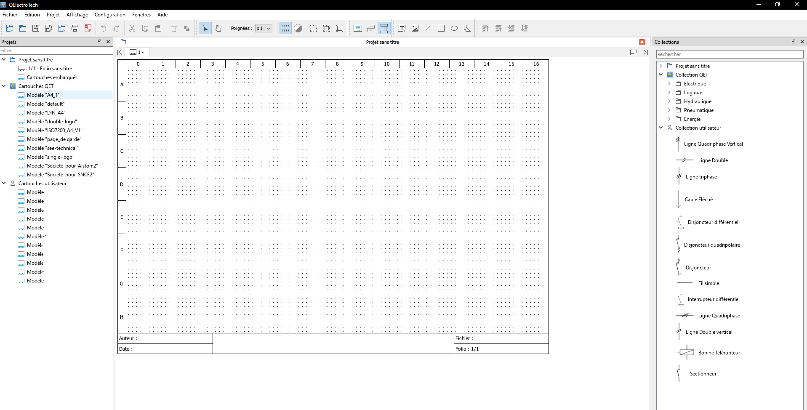

Schématisation Technique
Conception et documentation de l'infrastructure électrique et réseau.
Contexte
Lors de mon stage en électricité, j'ai eu l'opportunité d'intervenir sur un chantier pour documenter l'intégralité de l'infrastructure électrique. Ma mission était de transformer le câblage physique en un plan technique clair et exploitable. Cette étape de schématisation est essentielle pour assurer le suivi de l'installation et faciliter les interventions futures des équipes de maintenance.
Maîtrise de QElectroTech
Pour réaliser ce travail, j'ai utilisé l'outil QElectroTech. J'ai répertorié l'ensemble du réseau électrique et des lignes RJ45 du bâtiment pour créer un schéma détaillé en plusieurs pages. Pour chaque composant, des disjoncteurs du tableau général jusqu'aux prises terminales, j'ai identifié et reporté les intensités (ampérages), ainsi que les caractéristiques des câbles : section, catégorie et longueur.

Fiabilité de l'Infrastructure
Grâce à cette schématisation, j'ai pu livrer un dossier technique complet regroupant l'installation électrique et les points réseau. Ce travail permet de valider la conformité de l'installation et offre une vision globale de l'infrastructure électrique du bâtiment.